OligoMetab project · in-house Xenium / Visium / Falcão data plus sixteen public datasets · 2026-09-28
The question. Do for metabolism (ketone bodies, glycolysis and lactate, mitochondrial oxidation, fatty acids, lipids and their regulators) what OligoC4b did for complement: which cell types run which pathway, how that changes with disease, age, demyelination and lesion distance in every annotated cell type, and how it relates to the C4b⁺ disease-associated oligodendrocyte state.
The short answer. Metabolic identity of the cell types is stable across platforms and species. Neuroinflammation (EAE) shifts the whole tissue, not one cell type: cholesterol synthesis and the TCA cycle fall and lipid uptake and storage rise in nearly every cell type, steepest near lesions, where OPCs and newly formed oligodendrocytes lose cholesterol synthesis most. The disease-associated oligodendrocyte state, both in situ (Xenium, 107 samples) and in sorted single cells (Falcão), is less cholesterol and myelin-lipid synthesis, more lipid uptake and storage (Plin2 / Plin4, Abca1, Lpl, Cd36), a Hk2 / Pdk4 / Ldha glycolytic-switch signature, Bdh1 induction and less MCT1 (Slc16a1). In human MS oligodendrocytes cholesterol synthesis is, if anything, higher, and the hypoxia / nutrient-stress genes Hif1a, Txnip and Ddit4 are up. Across all mouse datasets the one metabolic feature that travels with C4b is lipid handling (Apod, Plin4, Abca1), not energy metabolism and not ketone bodies: the ketone enzymes belong to astrocytes and OPCs, the ketone receptor Hcar2 to microglia, and Hcar2⁺ and lactate-exporting Slc16a3⁺ cells are enriched around C4b-high oligodendrocytes in EAE as C5aR1⁺ cells were in OligoC4b.
Datasets are those of OligoC4b: Xenium mouse AD (347-gene panel, one section per genotype × age), Xenium mouse EAE (5K panel, 107 samples, lesion-distance annotation), Visium aging mouse brain (6 sections), Falcão et al. 2018 EAE scRNA-seq (sorted oligodendrocyte-lineage cells, microglia, VLMC) and sixteen public whole-transcriptome datasets (mouse AD, aging, demyelination, spatial AD; human AD and MS single-nucleus and Visium). The gene panel has 183 mouse genes in 21 pathway groups (ketone-body synthesis and utilisation, ketone / SCFA receptors, monocarboxylate and glucose transporters, glycolysis, pyruvate fate, pentose phosphate, glycogen, TCA, anaplerosis, OXPHOS, mitochondrial biogenesis, fatty-acid uptake and β-oxidation, lipid, cholesterol and myelin-lipid synthesis, cholesterol / lipid transport and storage, nutrient-sensing regulators). Pathway scores are scanpy.tl.score_genes values (set mean minus a size-matched control set, log scale) and are compared by difference; single genes by log2 fold change of pseudobulk means; groups by Mann–Whitney across samples when both have ≥3 samples.
| Platform | Panel genes present |
|---|---|
| Xenium mouse AD | 3 of 183 (Apoe, Apod, Acsbg1): metabolism is not measurable |
| Xenium mouse EAE (5K) | 100 of 183; no ketogenesis / ketolysis enzymes, 2 of 15 OXPHOS, 3 of 12 cholesterol-synthesis genes |
| Visium, Falcão, public | 177–183 of 183; metabolic genes are quantifiable in human data, unlike C4A/C4B |
Astrocytes and neurons carry the highest glycolysis, TCA and OXPHOS scores; homeostatic oligodendrocytes the highest lipid-synthesis and newly formed oligodendrocytes the highest cholesterol-synthesis score; microglia, macrophages and foamy myeloid cells the highest lipid-transport / storage score with the lowest cholesterol synthesis. In sorted cells OPC / COP / NFOL have the highest ketone-utilisation and TCA scores of the lineage. The same profile holds across the seven public mouse single-cell datasets. Hcar2 is microglial everywhere; Slc16a1 (MCT1) is in 39 % of EAE oligodendrocytes in situ and 29–57 % of whole oligodendrocytes in droplet data.
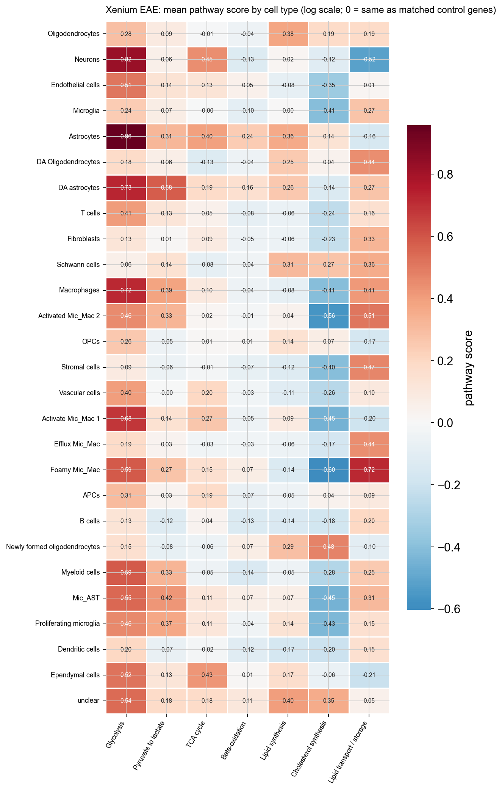
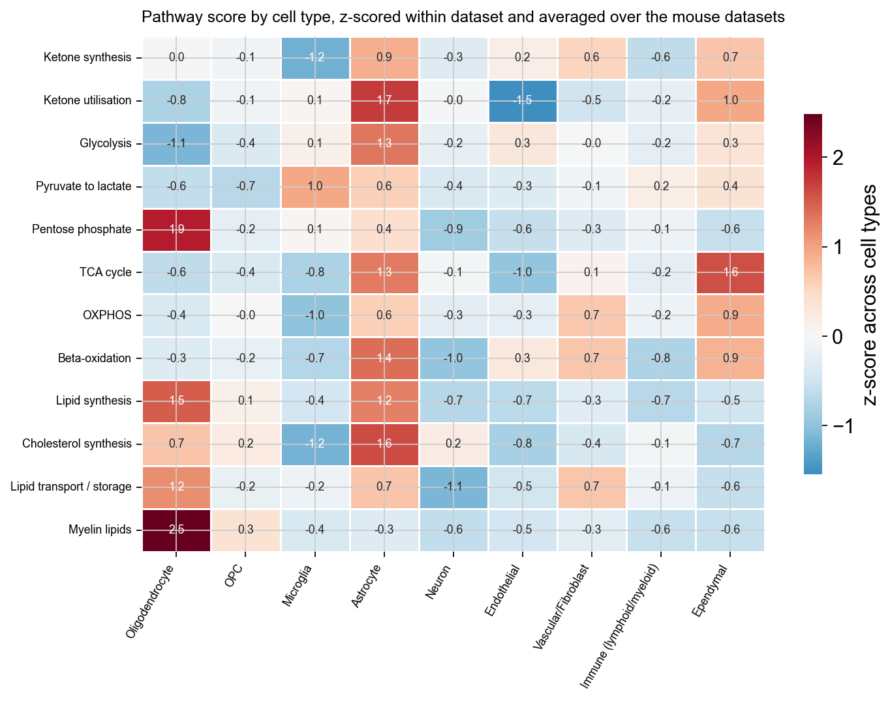
Comparing 92 EAE with 15 control samples per cell type, cholesterol synthesis falls and lipid transport / storage rises in essentially every cell type with enough control samples, and the TCA score falls in most; glycolysis rises only in microglia and DA oligodendrocytes. Gene-level, Hcar2, Cd36, Hk2, Plin2, Plin4, Abca1, Lpl, Slc16a3 and Txnip rise across many cell types. Toward lesions, glycolysis and TCA fall in neurons, oligodendrocytes, endothelial and vascular cells, lipid storage rises almost everywhere, and cholesterol synthesis falls most in OPCs (−0.33), newly formed oligodendrocytes (−0.29) and DA oligodendrocytes (−0.16).
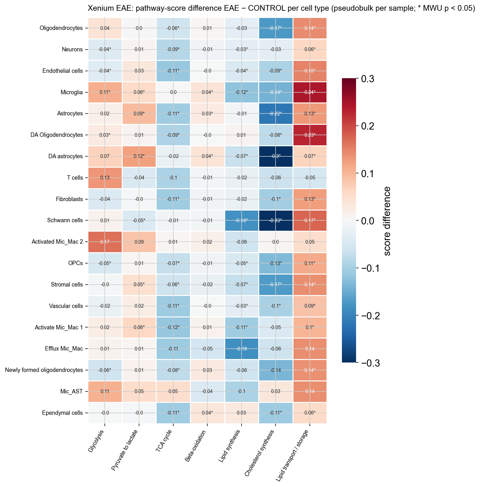
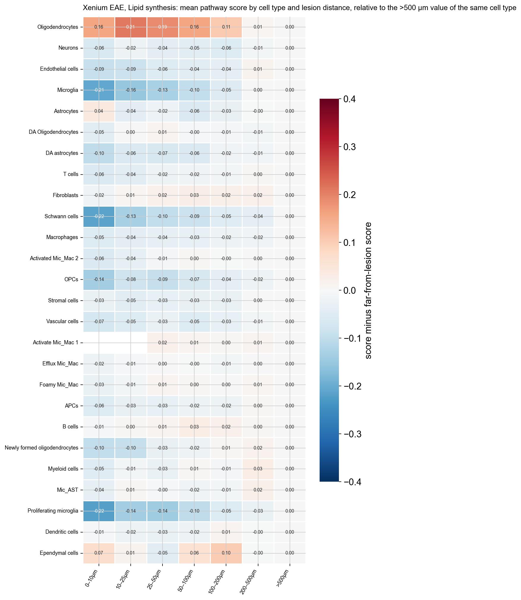
Within each of 107 samples, DA oligodendrocytes score lower than homeostatic ones on glycolysis (−0.10), TCA (−0.12), lipid synthesis (−0.15) and cholesterol synthesis (−0.16) and higher on lipid transport / storage (+0.15; 99 % of samples). Genes up: Hk2 (3.5×), Mlxipl, Hcar2, Cd36, Lpl, Slc16a3, Slc2a4, Txnip, Fabp7, Plin2, Abca1, Ldha, Pdk1; down: Slc2a3, Eno2, Ppargc1a, Got2, Mpc2, Pcx, Fh1, Ogdh, Mfn2, Dnm1l, Elovl1, Pfkp. Sorted cells (Falcão, EAE-MOL vs control-MOL) confirm the core intrinsically: cholesterol synthesis −1.0 (Hmgcs1, Fdps, Cyp51, Dhcr7, Dhcr24, Sqle each 20–30 % lower), myelin-lipid synthesis −0.30, lipid transport / storage +0.95 (Plin4 5×, Plin2 3×, Abca1 2.5×), Pdk4 4×, Ldha 2.2×, Cpt1a 2.5×, Bdh1 2.3×, Slc16a1 −0.24 log2. The direction of the glycolysis / TCA scores differs between the two datasets (down in situ, up in sorted cells) because the 15-gene Xenium set is weighted toward Eno2, Pfkp and Slc2a3, which fall, and the whole-transcriptome set toward Aldoa, Tpi1, Gapdh and Ldha, which rise; the gene tables are the safer read-out.
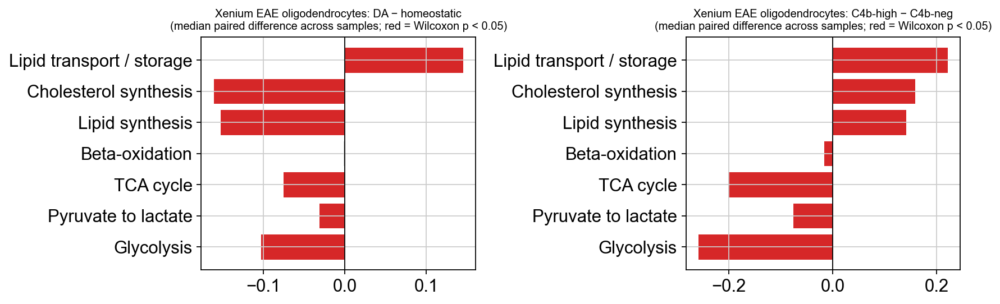
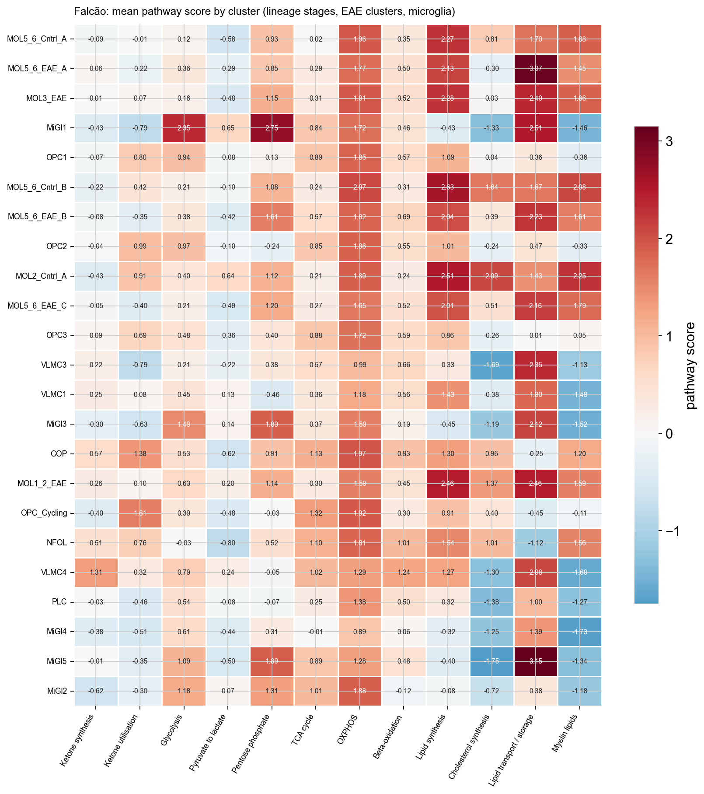
Pathway-score differences in public oligodendrocytes are mostly within ±0.05. Clear ones: Schirmer MS oligodendrocytes more glycolytic (+0.16) and oxidative (+0.11) with more lipid storage; aged oligodendrocytes (Ximerakis) less OXPHOS, cholesterol and myelin-lipid synthesis; slightly lower ketone synthesis / utilisation in MS oligodendrocytes in three human sets; less lipid synthesis at Braak 6. At the gene level the same genes move in most of the 14 oligodendrocyte contrasts: Lpl and Hk2 up in 10, Apoe / Plin2 / Fabp5 up in 6–7, Slc16a1 down in 5, Gal3st1 in 6, Acsl6, Ppara, Lss, Srebf1, Cpt1c, Scd1 in 4–5. Microglia show the most reproducible signature of all: Lpl up in 12 of 13 contrasts (median log2FC 2.8), Apoe and Plin2 in 8, Pparg and Cd36 in 6–8, Hcar2 in 6 of 10. Astrocytes gain Cd36 and Fabp7 and lose ketone utilisation in every MS dataset. Human MS oligodendrocytes have modestly higher cholesterol-synthesis scores than controls and more Hif1a, Txnip and Ddit4.
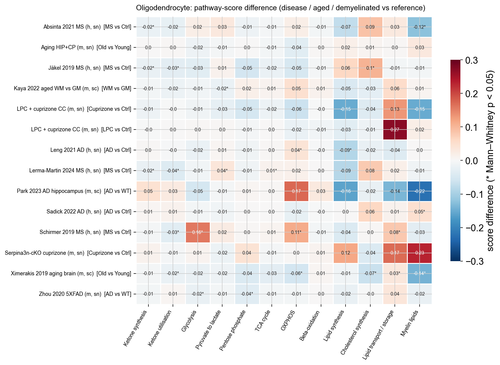
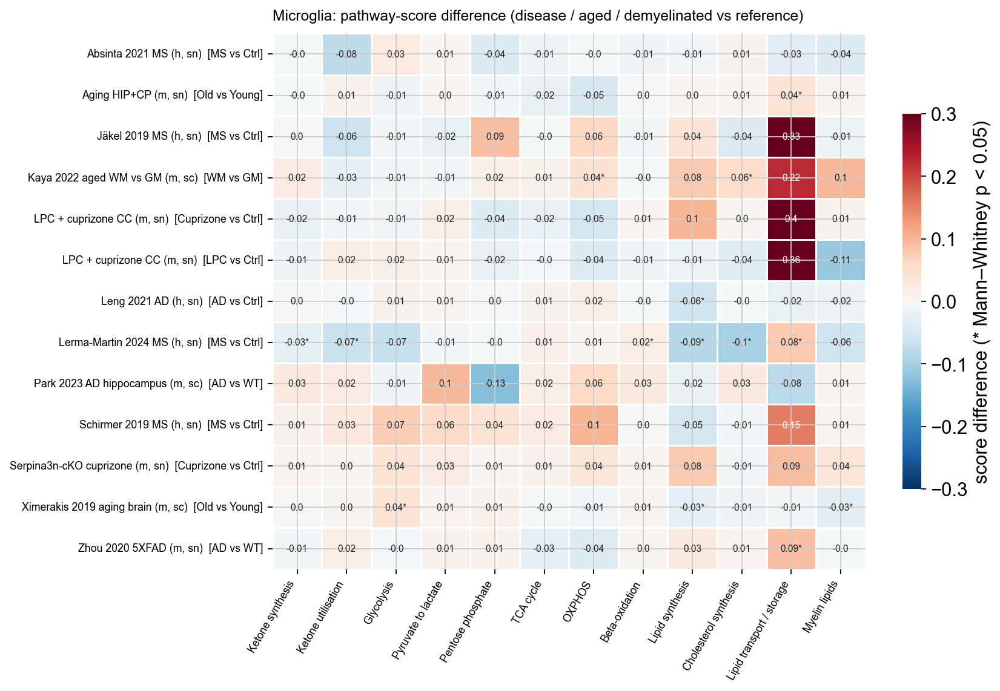
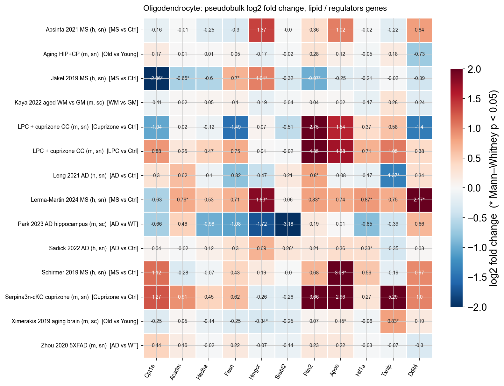
Inside DA oligodendrocytes (Xenium EAE) the metabolic genes that track C4b are lipid-droplet / lipid-handling genes (Plin4 rank 2 of 3,673 panel genes, Apod 42, Cers2 72, Fasn 86); no metabolic pathway is enriched as a set, and across the lineage glycolysis, TCA and mitochondrial-biogenesis genes are anti-correlated with C4b. In sorted MOL lipid transport / storage is the top pathway (Apod ρ 0.46, Plin4 0.40, Abca1 0.32) and cholesterol synthesis is significantly anti-correlated. In the public mouse datasets the correlations are weak (|mean rho| < 0.1), Apod recurs among the top ranks (8–42), lipid transport / storage is the enriched pathway in LPC / cuprizone, Serpina3n-cKO and 5XFAD, and C4b-high oligodendrocytes have a higher lipid-storage score in all seven datasets. Ketone-body genes are not part of the program.
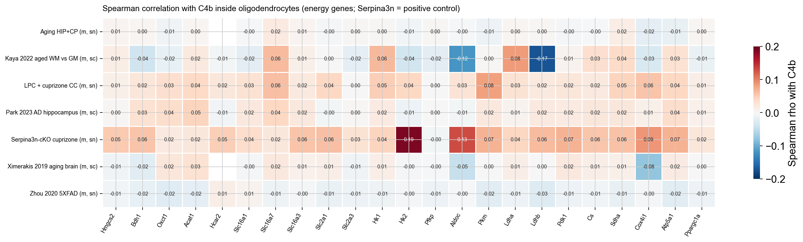
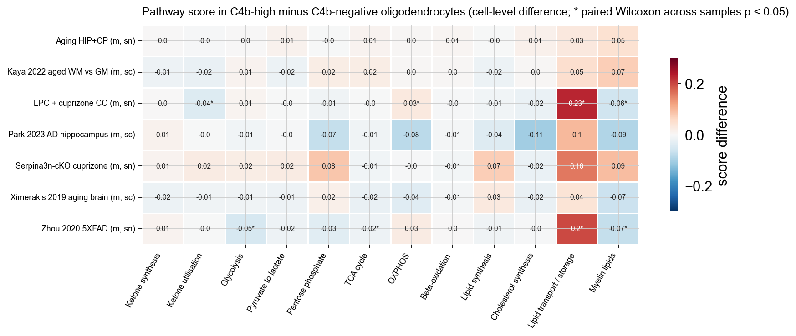
Hcar2⁺ cells (median ratio 1.7), Hcar2⁺ myeloid cells (1.8), Slc16a3⁺ astrocytes (2.3), Hk2⁺ (1.8), Pdk1⁺ (1.3) and Plin2⁺ (1.4) cells are enriched within 30 µm of C4b-high compared with C4b-negative oligodendrocytes in 87 samples (paired Wilcoxon p < 10⁻⁵); Slc2a1⁺ cells are not. The enrichment survives matching for lesion distance (1.2–1.75) and restriction to non-lesion tissue (1.3–2.2).
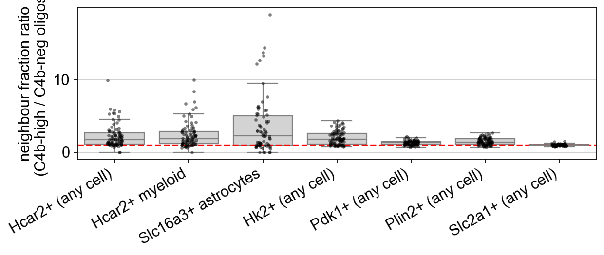
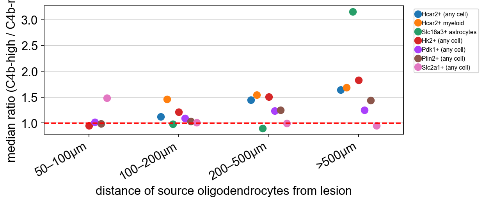
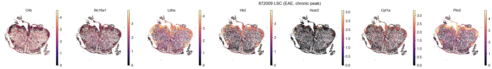
Whole-section glycolysis, TCA and OXPHOS scores rise slightly with age (p ≈ 0.03–0.04, slopes of a few hundredths over 15 months). In white-matter-rich spots the lipid-synthesis score falls, Fa2h, Ugt8a, Cyp51 and Hmgcs1 decline by 10–19 %, Apoe and Plin2 rise and Ddit4, Slc2a1 and Sirt1 fall: a mild version of the EAE pattern.
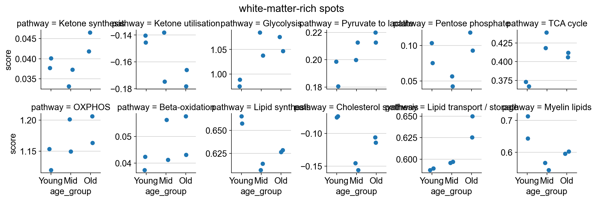
Repository oligoMetab (GitHub, christoffermattssonlangseth/oligoMetab): executed notebooks under notebooks/analysis/, sources under notebooks/src/, the gene panel and helpers in scripts/oligometab.py, summary tables in results/, and plain-language documentation in docs/ (metabolism_findings.md, gene_panel.md, notebooks.md, public_datasets.md). Data are the OligoC4b objects on the group's analysis machine.